Synced lyrics
The full-screen player follows the song line by line, when your server has lyrics in the file or as an .lrc next to it.
For Navidrome & Subsonic servers
Tonalo plays your own music library on LG TVs and the iPhone, with an Apple Watch app and CarPlay. Free, open source, and it talks to nobody but your server.
MIT licensed. Source code on GitHub.
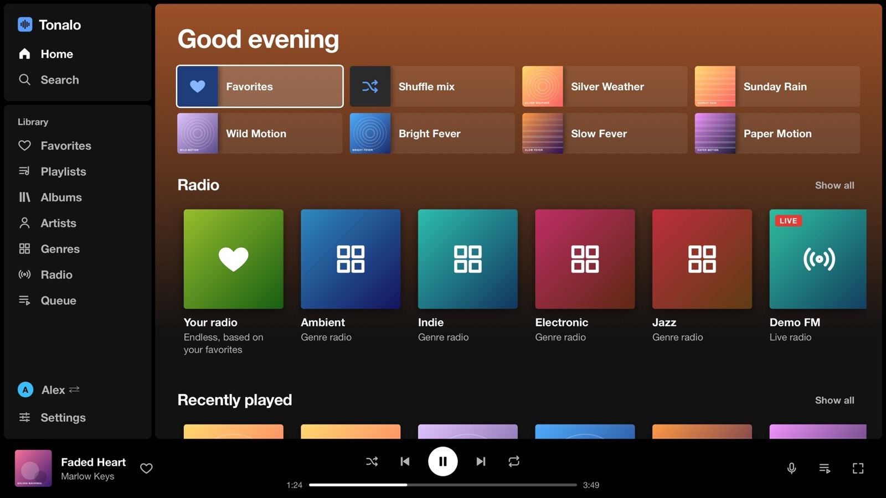
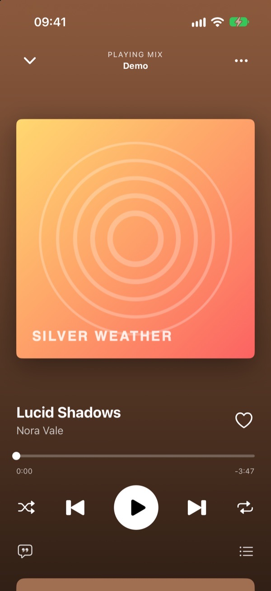
LG webOS TV
Navidrome's web player technically opens in the TV browser, but it is built for a mouse. Tonalo is a real webOS app: arrows and OK to get around, Back to go back, and the play, pause and skip buttons do what you would expect.
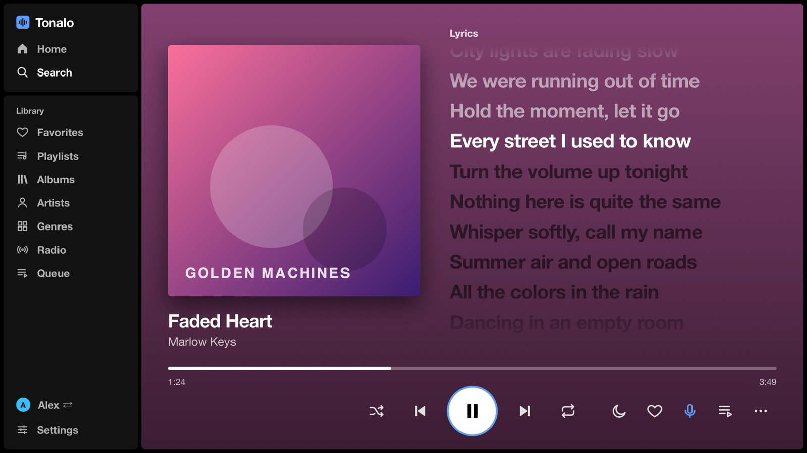
The full-screen player follows the song line by line, when your server has lyrics in the file or as an .lrc next to it.
From a song, an artist, a genre or your favorites. It tops itself up and learns from skips and hearts.
Everyone signs in once and picks their name on start. Queues, favorites and settings stay apart.
Fade 3 to 12 seconds between songs, and even out loud and quiet albums with ReplayGain.
Stop after 15 to 90 minutes or at the end of the song. The music fades out gently.
A slowly moving screensaver with the cover and a clock, so nothing burns into the panel.
English, German, Spanish, French, Italian, Portuguese, Dutch, Polish and Turkish. It follows the TV.
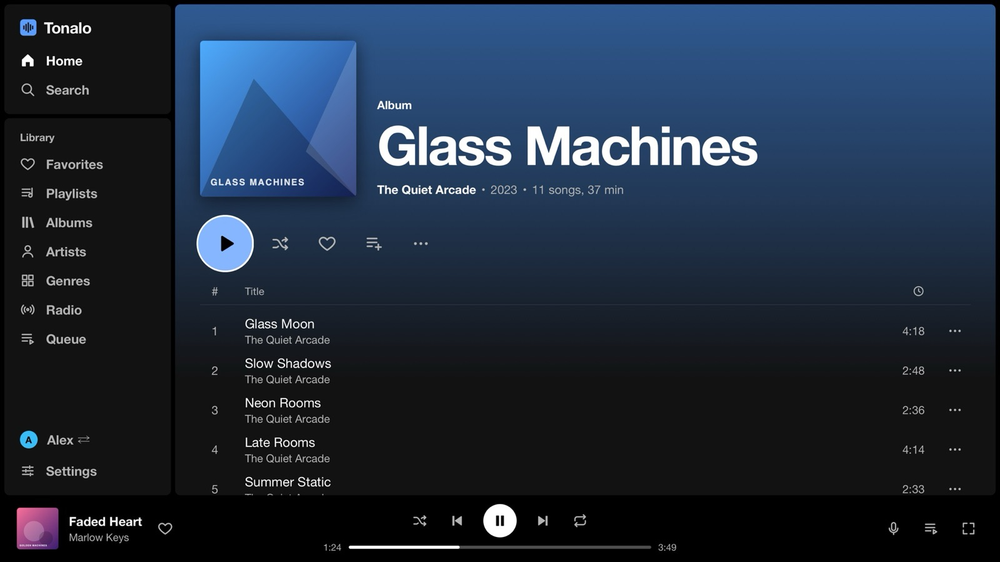
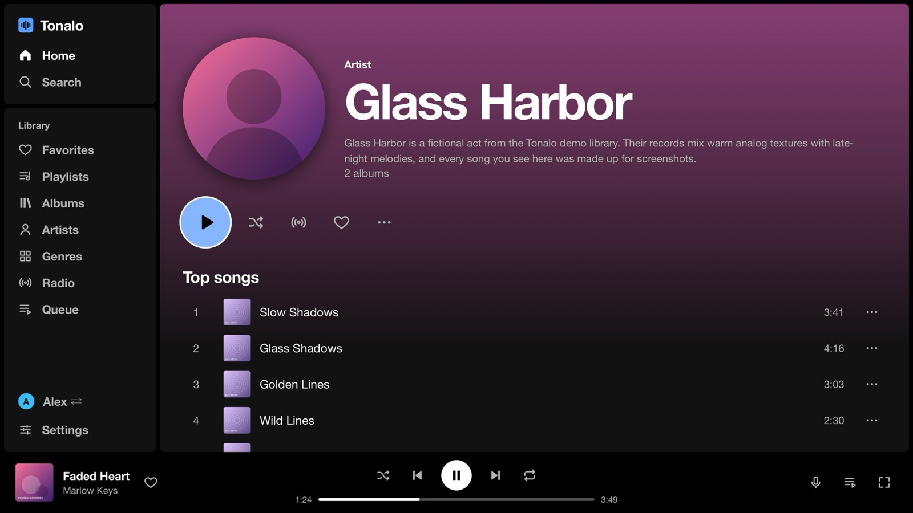
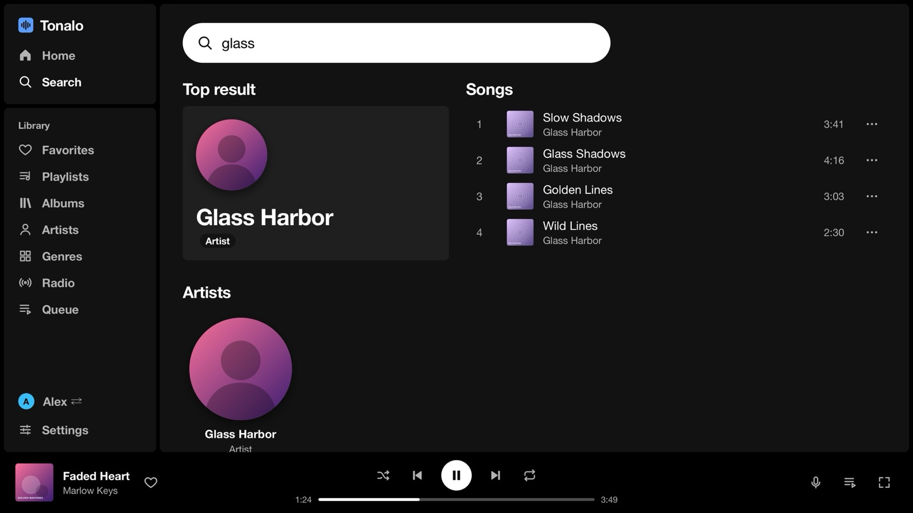
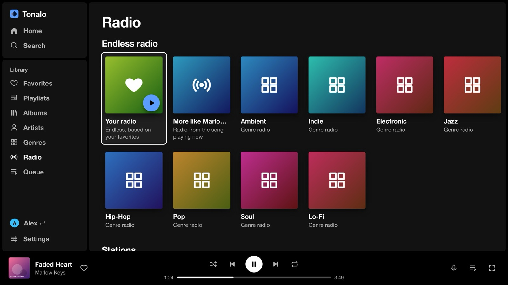
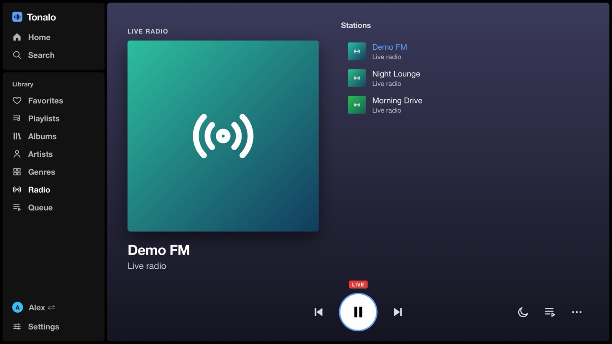
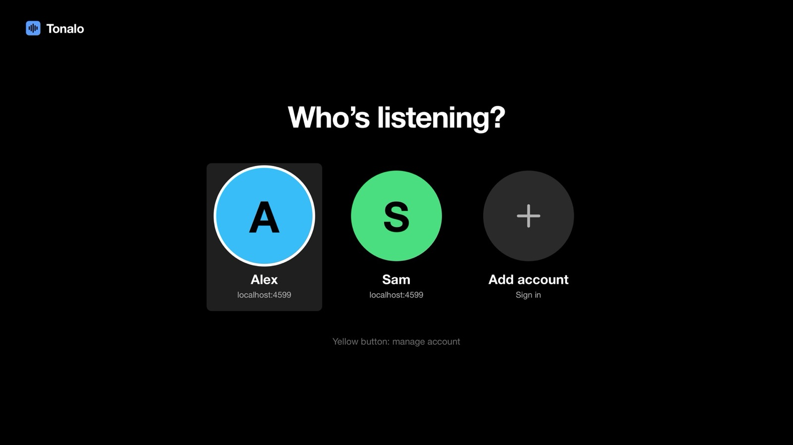
The Magic Remote pointer works too, but you never need it. The queue survives a restart, songs move up and down with the arrows, and playlists can be renamed, cleaned up or deleted right from the couch.
iPhone
A native SwiftUI app with a home screen, search, a library and a player that takes its colors from the cover. Lossless stays lossless, and the whole library works offline if you want it to.
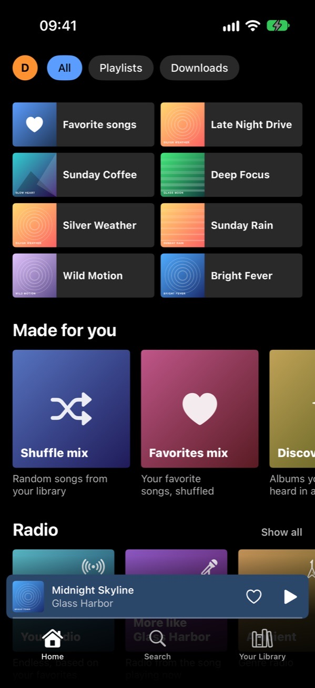
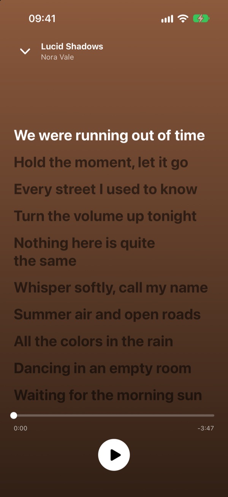
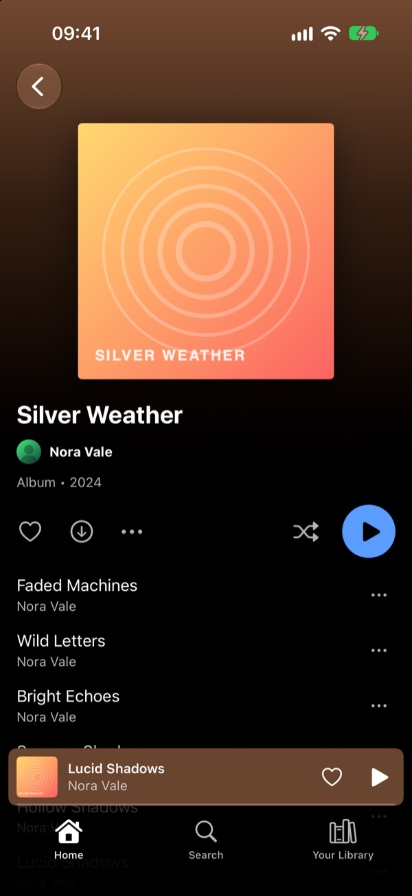
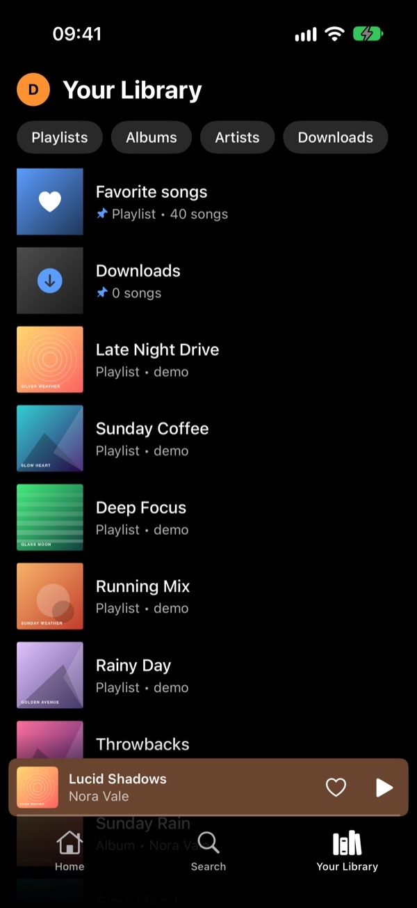
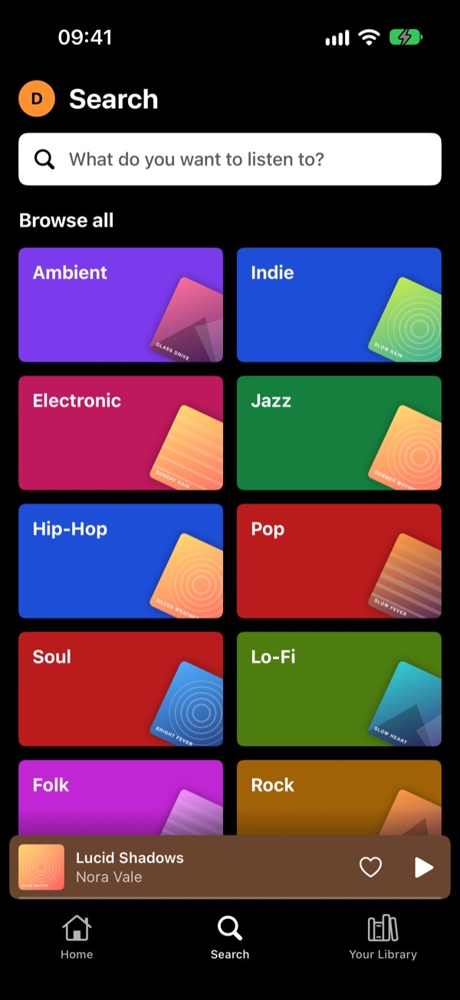
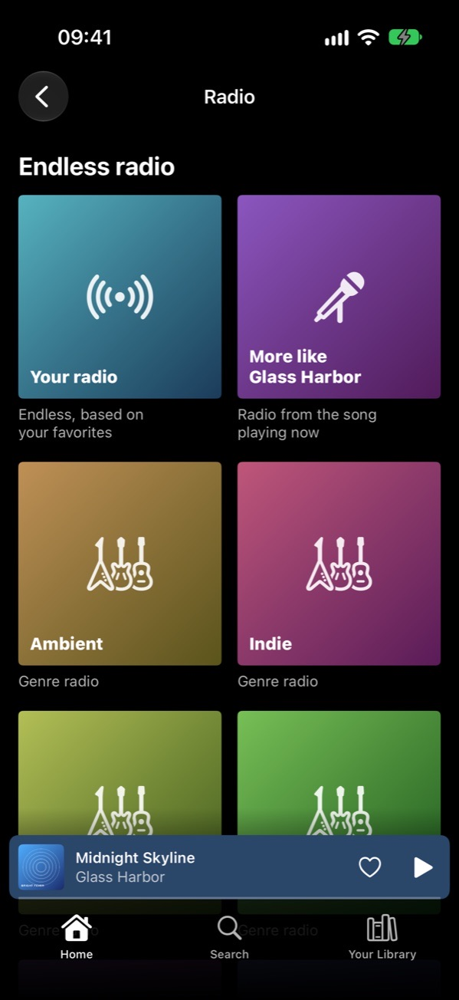
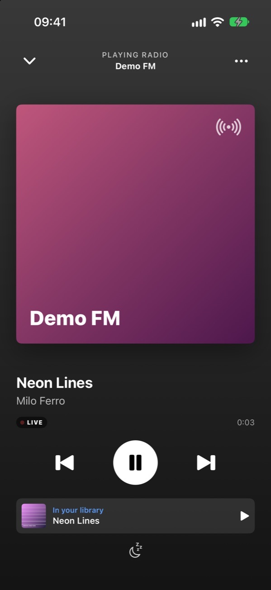
Radio
Pick a song and Tonalo keeps playing music like it, straight from your library, for as long as you listen. It gets better the more you skip and like.
The internet radio stations set up in Navidrome play live on both apps. On the iPhone you see the song on air, and if it's in your library, one tap plays it from there.
Between devices
Your queue and position are kept on your Navidrome server. Pause on the iPhone, open Tonalo on the TV, and it offers to carry on with the same song at the same second. It works the other way round too.
No extra service and no pairing. It uses Navidrome's own play queue, so there is nothing to set up.
Apple Watch & CarPlay
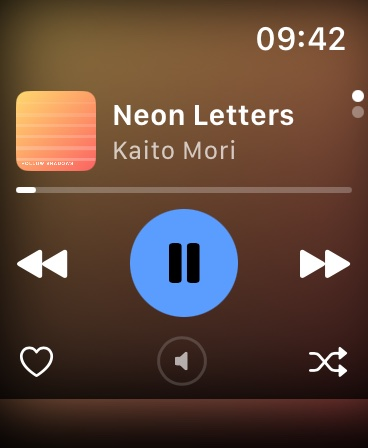
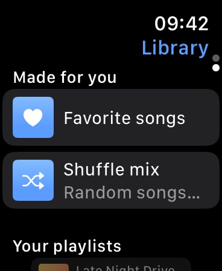
A remote for the iPhone that comes along with the app. It never talks to your server and stores no login.
Your library on the car screen, made to be used at a glance.
Privacy
Tonalo has no backend of its own. There is no account to create and nothing to opt out of.
Only the salted token the Subsonic API uses is kept, never the password itself.
The token and any custom headers live in the iOS Keychain, on that one device.
No tracking, no ad SDKs, no third-party code at all in the iPhone app.
Custom headers never follow a redirect to another host.
Plain http is only used for addresses in your home network.
Every line is on GitHub, so you can check what the apps do.
The only other connection: a radio station's own server while you listen to it. Details in the privacy policy.
Download
Both apps are free. Bring a Navidrome server, or any other server that speaks the Subsonic API.
iOS 17 or newer · watchOS 10 or newer
LG TV · webOS 5 or newer
http://192.168.1.10:4533, and sign in.Questions
Tonalo is built and tested with Navidrome. Other servers with the Subsonic API, like Gonic or Airsonic-Advanced, should work but haven't been tried yet. Reports are very welcome.
No. Both apps are free and MIT licensed, without ads, subscriptions or in-app purchases.
The iPhone app is in public beta on TestFlight right now; the App Store comes next. The TV app is planned for the Homebrew Channel. Until then, the .ipk from the GitHub releases works on any rooted TV or one in Developer Mode.
Popular songs, similar artists and biographies come from Navidrome, which gets them from Last.fm. Adding a free Last.fm API key to Navidrome takes two minutes; the server tips show how. Without it, the iPhone app shows your own most played songs instead.
Not at the moment. Tonalo is made for LG webOS and the iPhone.
A good part of the code was written together with an AI coding assistant. Everything is tested on a real LG OLED and iPhone, and the code is public, so you can see exactly what it does.
Open an issue on GitHub; there are forms for both. On the iPhone you can also send a screenshot as TestFlight feedback. Security problems please report privately.